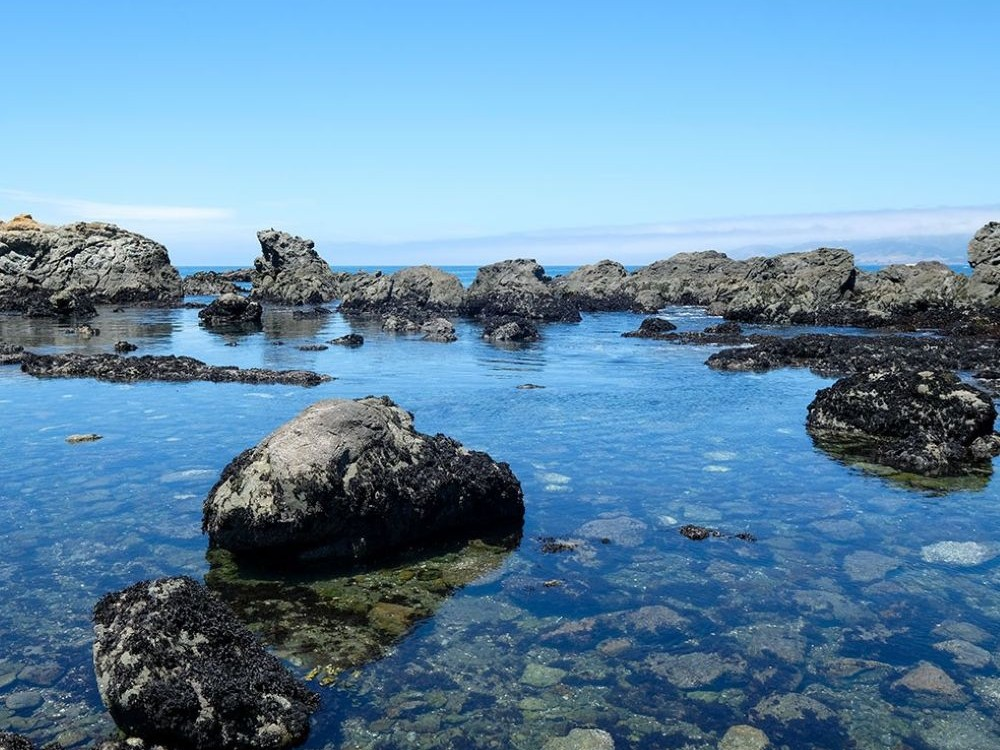
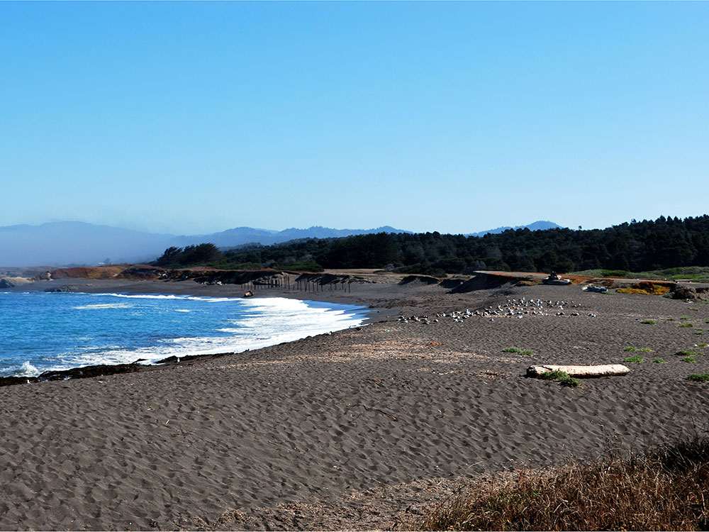
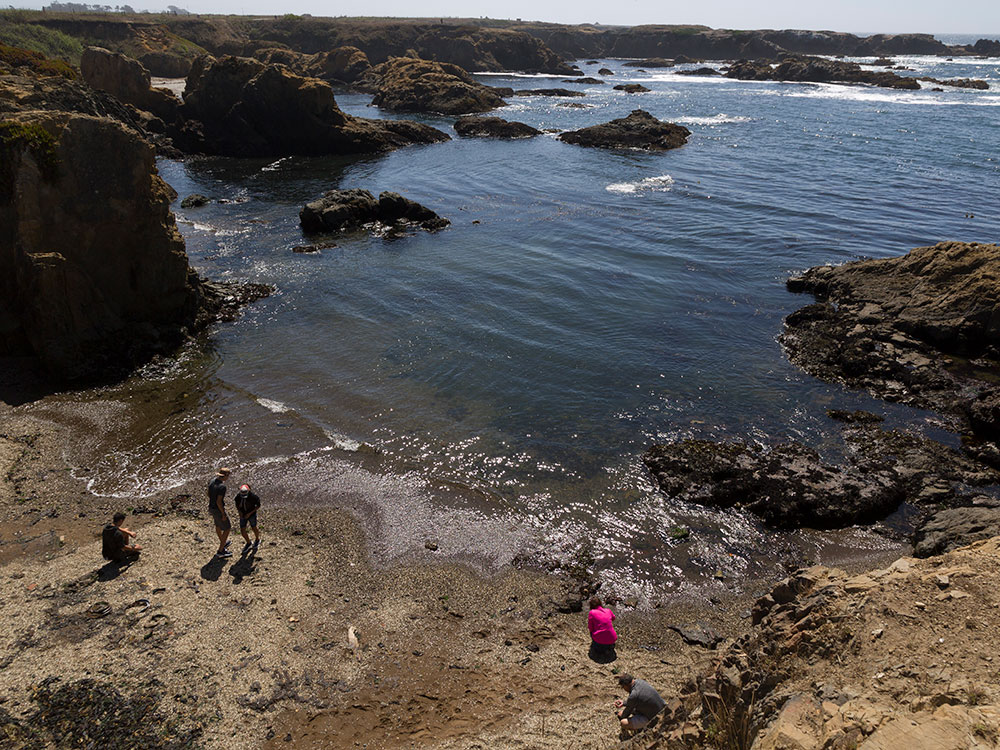
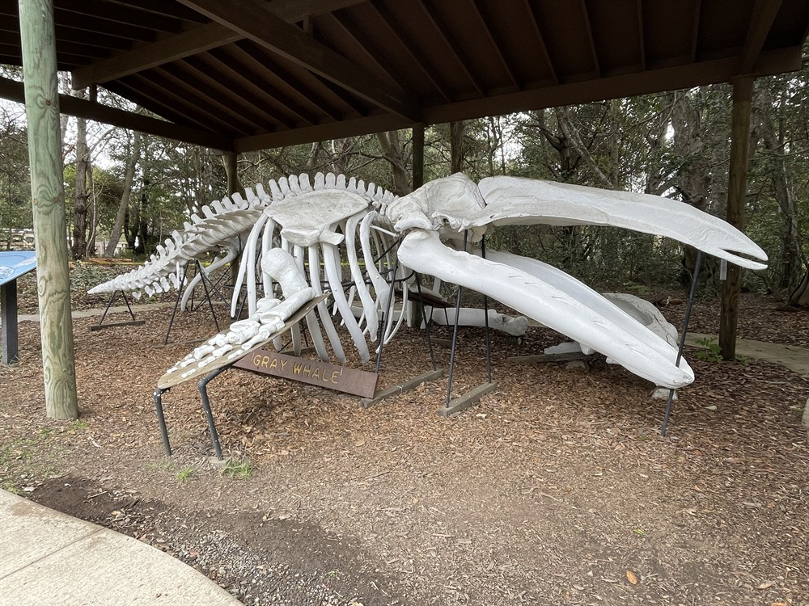
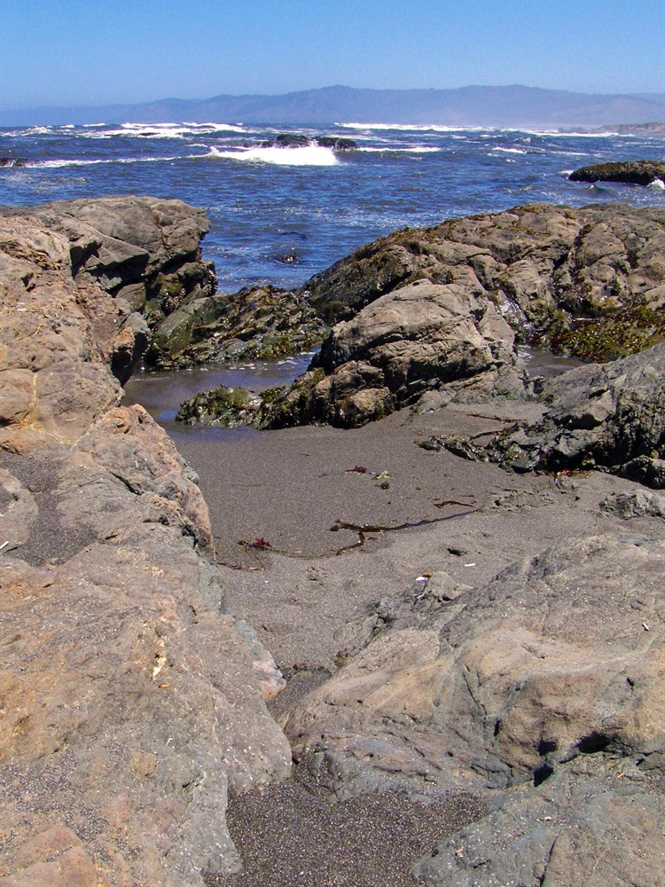
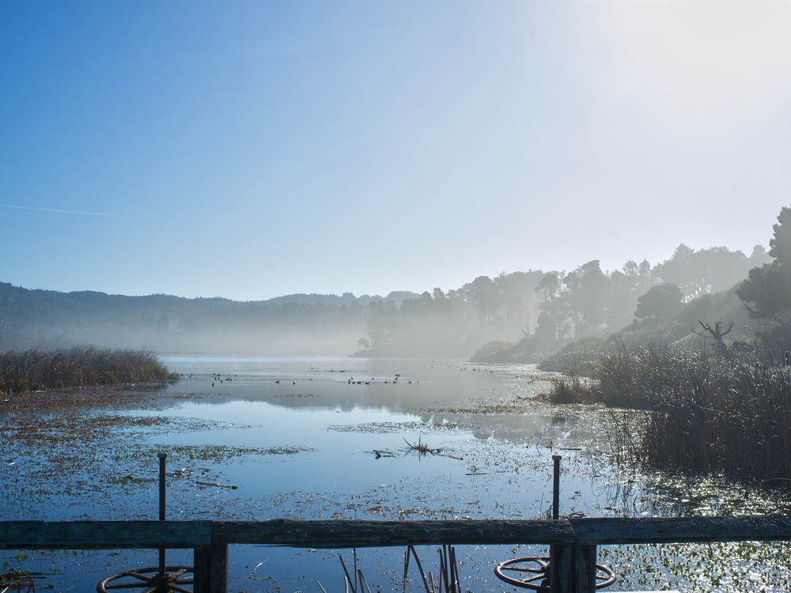
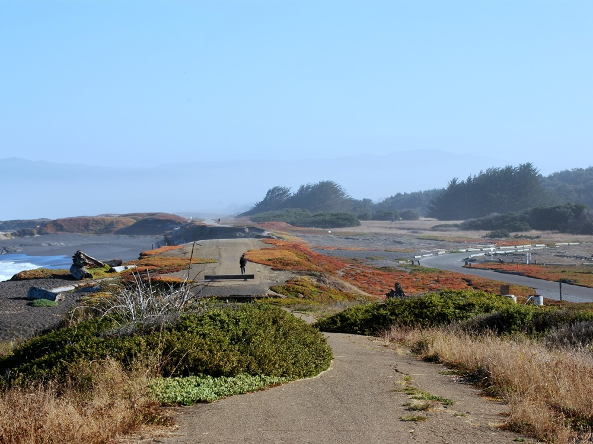

State park located 3 miles north of Fort Bragg, covering 9 miles of coastline and contains beaches, dunes, headlands, coves, wetlands, tide pools, forest, and a freshwater lake
General Information
Visitor Center: 11am to 4pm
Senior discount: $7
Walk-in and bike access: Free
How to Get There
From Mendocino, CA (10 mi): Head north on CA-1 for approximately 10 miles; turn left onto Mackerricher Park Road and follow signs to the park entrance.
Overview
MacKerricher State Park covers nine miles of Mendocino coast just north of Fort Bragg, with beaches, dunes, headlands, tide pools, forest and a freshwater lake. The land was once a ranch settled by Duncan and Jessie MacKerricher, whose descendants sold it to the state, and the park was established in the early 1950s. It is best known for Glass Beach at its southern end, a shoreline of sand-polished glass pebbles left from an old dump. Harbor seals haul out on the rocks, gray whales pass between December and April, and more than 90 bird species have been recorded. Lake Cleone is stocked for fishing, and the park has campgrounds and trails for walking, cycling and horseback riding.
Access
The park is on Highway 1 about 3 miles north of Fort Bragg, near Cleone, and about 10 miles from the village of Mendocino. The main entrance is on MacKerricher Park Road, and nearly all visitors arrive by car. The day-use fee is $8 per vehicle, and walk-in and bike-in visitors enter free. The Haul Road, a former logging railroad grade that is now a paved multi-use trail, is wheelchair accessible and offers an easy way to see the coast. Beach wheelchairs are available free with advance reservation at (707) 964-9112.
Seasons
The park is open year-round, and the Mendocino coast is cool, foggy and windy even in summer, so bring layers. Winter and spring are the best seasons for whale watching from the headland, and State Parks offers free guided whale-watching walks on weekends in March. Harbor seals can be seen on the rocks at the seal watching stations, and summer brings Junior Ranger and campfire programs. Spring is also good for wildflowers and birds, while winter storms bring dramatic surf. Check for any temporary road or parking closures at Laguna Point before visiting.
Things to Do
Explore One of Northern California's Premier Coastal Parks
MacKerricher State Park stretches along nine miles of spectacular Mendocino County coastline near Fort Bragg and protects a diverse landscape of sandy beaches, rugged headlands, coastal dunes, wetlands, forests, and marine habitats. The park is one of the most popular destinations on the North Coast for wildlife viewing, hiking, beachcombing, and enjoying the scenic Pacific coastline.
Visit Laguna Point and Watch Marine Wildlife
Laguna Point is one of the park's most famous attractions and offers exceptional opportunities to observe harbor seals, sea lions, seabirds, and migrating gray whales. Interpretive signs and viewing platforms help visitors learn about the marine ecosystem while enjoying panoramic ocean views.
Explore Glass Beach Nearby
Located at the southern end of the park near Fort Bragg, Glass Beach is famous for its colorful sea glass deposits created by decades of wave action. Visitors can admire this unique shoreline while learning about its environmental restoration history.
Discover Coastal Wetlands and Dune Habitats
MacKerricher State Park contains extensive wetland and dune systems that support a rich variety of wildlife. Birdwatchers can observe herons, egrets, waterfowl, shorebirds, and numerous migratory species throughout the year.
Enjoy Beachcombing and Tide Pool Exploration
The park's beaches provide opportunities for beachcombing, tide pooling, photography, and exploring the rugged North Coast shoreline. During low tide, visitors can observe sea stars, anemones, crabs, and other marine life in rocky intertidal habitats.
Experience Camping and Outdoor Recreation
The park offers campgrounds near the coast, making it a popular destination for overnight stays. Visitors can enjoy hiking, cycling, horseback riding, wildlife photography, fishing, and relaxing among the area's scenic natural surroundings.
Top Trails
MacKerricher Haul Road Trail
Length: Approximately 6 miles one way
Elevation Gain: Minimal
Difficulty: Easy
Following a former logging railroad route, this multi-use trail travels along the coastline and provides access to beaches, wetlands, wildlife viewing areas, and scenic ocean overlooks. It is popular for hiking, biking, and walking.
Laguna Point Boardwalk Trail
Length: Approximately 1 mile round trip
Elevation Gain: Minimal
Difficulty: Easy
This accessible boardwalk leads visitors through coastal habitats to Laguna Point, where viewing platforms provide excellent opportunities to observe seals, whales, seabirds, and dramatic coastal scenery.
Ten Mile Dunes Trail
Length: Approximately 3 miles round trip
Elevation Gain: Minimal
Difficulty: Easy
This scenic trail traverses coastal dune ecosystems and offers views of the Pacific Ocean, wetlands, and the Ten Mile River estuary. The route is especially popular for birdwatching and photography.
Lake Cleone Trail
Length: Approximately 1.5 miles loop
Elevation Gain: Minimal
Difficulty: Easy
This peaceful trail circles Lake Cleone and passes through forested habitats rich in birdlife and native vegetation. It provides a quieter hiking experience away from the coastal bluff areas.
Visitor Centers
The park lists a visitor center and environmental learning facility with exhibits on the coastal ecosystems, seals, whales and dune habitats, along with trail maps. State Parks lists a visitor center phone number of (707) 964-8898, and hours vary by season, so call ahead. The Mendocino District Office, at (707) 937-5804, is open weekdays and can answer questions about camping, trails and closures.
Camping and Lodging
The park offers tent and RV camping (motorhomes and trailers up to 35 feet), group sites and hike-and-bike sites, with pay showers for registered campers, and reservations are made through ReserveCalifornia. Hotels, motels and inns are in Fort Bragg (about 3 miles) and the village of Mendocino (about 10 miles), with additional lodging in Westport and Little River within about 45 minutes. Other state park campgrounds along the Mendocino coast offer more options for summer weekends.
Sources: California State Parks official MacKerricher State Park information, including details on Laguna Point, Ten Mile Dunes, coastal habitats, wildlife viewing opportunities, campgrounds, trails, and visitor amenities.
https://www.parks.ca.gov/?page_id=436https://www.parks.ca.gov/?page_id=436
Additional information verified through Mendocino County visitor resources covering Glass Beach, harbor seal viewing, coastal wetlands, birdwatching opportunities, recreational activities, and natural features throughout MacKerricher State Park.
https://www.visitmendocino.com/https://www.visitmendocino.com/
This article uses material from the Wikipedia article "MacKerricher State Park", which is released under the Creative Commons Attribution-Share-Alike License 3.0. Additional information from California State Parks.
Featured Location

Glass Beach
Beach adjacent to MacKerricher State Park near Fort Bragg, CA, named from abundant sea glass created from years of dumping garbage into an area of coastline near the northern part of the town.









.jpg){kind=link}

.jpg){kind=link}
